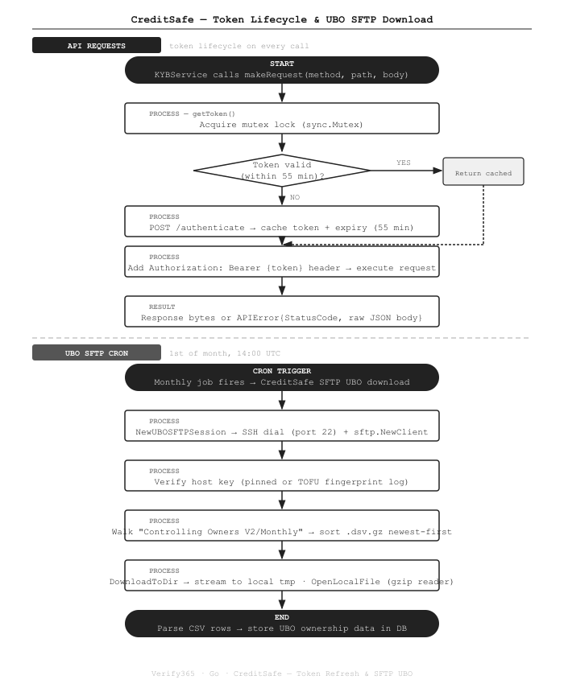

Company Verification and UBO Data via CreditSafe SFTP in Go
How we integrated CreditSafe into a Go compliance platform — covering automatic token refresh with mutex protection, SFTP host key pinning, and on-the-fly gzip decompression of UBO ownership files.
The Problem
UK AML regulations require law firms to verify the identity and ownership of corporate clients — including tracing Ultimate Beneficial Owners (UBOs) through complex holding structures. CreditSafe provides two separate data access mechanisms: a REST API for on-demand company lookups, and a monthly SFTP feed for the full Controlling Ownership dataset. We needed both integrated reliably in a production Go service.
What We Built
Two complementary integration paths in the creditsafe package inside the Verify365 backend:
- REST API client — token-cached HTTP client for company search, credit reports, and document images
- UBO SFTP session — SSH-based SFTP client for monthly bulk UBO data download with gzip streaming
How It Works

The Code
Token cache with mutex protection
CreditSafe tokens have a ~1 hour TTL. We cache the token and refresh it 5 minutes early to avoid a mid-request expiry.
sync.Mutex ensures concurrent goroutines don't trigger multiple simultaneous re-auth calls:
// thirdparty/creditsafe/client.go
type CreditSafeClient struct {
logger *zerolog.Logger
httpClient *http.Client
baseURL string
username string
password string
token string
tokenExpiry time.Time
mu sync.Mutex // protects token + tokenExpiry
}
func (c *CreditSafeClient) getToken() (string, error) {
c.mu.Lock()
defer c.mu.Unlock()
// Return cached token if still valid
if c.token != "" && time.Now().Before(c.tokenExpiry) {
return c.token, nil
}
// POST /authenticate to get a new token
payload, _ := json.Marshal(map[string]string{"username": c.username, "password": c.password})
req, _ := http.NewRequest(http.MethodPost, c.baseURL+"/authenticate", bytes.NewBuffer(payload))
req.Header.Set("Content-Type", "application/json")
resp, err := c.httpClient.Do(req)
// ... read body, check status ...
var result struct{ Token string `json:"token"` }
json.Unmarshal(b, &result)
c.token = result.Token
c.tokenExpiry = time.Now().Add(55 * time.Minute) // 1h token, refresh at 55m
return c.token, nil
}Injecting the bearer token on every request
All API calls go through makeRequest(), which calls getToken() and attaches the bearer header.
Non-200 responses are wrapped in an APIError that preserves the raw JSON body for the caller to proxy:
// Custom error type — preserves raw JSON body for proxy responses
type APIError struct {
StatusCode int
Body json.RawMessage
}
func (e *APIError) Error() string {
return fmt.Sprintf("creditsafe API error %d: %s", e.StatusCode, string(e.Body))
}
func (c *CreditSafeClient) makeRequest(method, path string, body []byte) ([]byte, error) {
token, err := c.getToken() // acquires mutex, refreshes if needed
if err != nil {
return nil, err
}
req, _ := http.NewRequest(method, c.baseURL+path, bytes.NewBuffer(body))
req.Header.Set("Authorization", "Bearer "+token)
req.Header.Set("Accept", "application/json")
resp, err := c.httpClient.Do(req)
// ...
if resp.StatusCode != http.StatusOK {
return nil, &APIError{StatusCode: resp.StatusCode, Body: json.RawMessage(b)}
}
return b, nil
}SFTP session with host key pinning
The monthly UBO download uses SSH/SFTP. We support two host key verification modes: pinned (production-safe) and TOFU (first-run helper):
// thirdparty/creditsafe/sftp.go
func hostKeyCallback() (ssh.HostKeyCallback, error) {
rawKey := os.Getenv("CreditSafeSFTPHostKey") // e.g. "ssh-rsa AAAA..."
if rawKey != "" {
pub, _, _, _, err := ssh.ParseAuthorizedKey([]byte(rawKey))
if err != nil {
return nil, fmt.Errorf("parse CreditSafeSFTPHostKey: %w", err)
}
return ssh.FixedHostKey(pub), nil // reject any other key
}
// TOFU mode: accept any key but log the fingerprint for the operator to pin
return func(_ string, _ net.Addr, key ssh.PublicKey) error {
log.Printf("WARNING: CreditSafeSFTPHostKey not set. "+
"Key type=%s fingerprint=%s — copy to env to pin it.",
key.Type(), ssh.FingerprintSHA256(key))
return nil
}, nil
}
func NewUBOSFTPSession(host, username, password string) (*UBOSFTPSession, error) {
hkCallback, _ := hostKeyCallback()
sshConn, err := ssh.Dial("tcp", net.JoinHostPort(host, "22"),
&ssh.ClientConfig{
User: username,
Auth: []ssh.AuthMethod{ssh.Password(password)},
HostKeyCallback: hkCallback,
Timeout: 30 * time.Second,
})
client, _ := sftp.NewClient(sshConn)
return &UBOSFTPSession{client: client, conn: sshConn}, nil
}Walking the SFTP directory and sorting by date
Files are discovered by walking the UBO directory, sorted newest-first with compressed files preferred:
func (s *UBOSFTPSession) ListUBOFiles() ([]string, error) {
type candidate struct {
path string
modTime time.Time
compressed bool
}
var files []candidate
// Walk the remote "Controlling Owners V2/Monthly" directory
walker := s.client.Walk("Controlling Owners V2/Monthly")
for walker.Step() {
if walker.Stat().IsDir() { continue }
p := walker.Path()
if strings.HasSuffix(p, ".dsv.gz") {
files = append(files, candidate{p, walker.Stat().ModTime(), true})
}
}
// Sort: compressed first, then newest-first within same type
sort.Slice(files, func(i, j int) bool {
if files[i].compressed != files[j].compressed {
return files[i].compressed
}
return files[i].modTime.After(files[j].modTime)
})
paths := make([]string, len(files))
for i, f := range files { paths[i] = f.path }
return paths, nil
}On-the-fly gzip decompression
Rather than decompressing to a separate file, we return a ReadCloser that decompresses as the caller reads.
It wraps both the gzip reader and the underlying file so both are properly closed:
func OpenLocalFile(localPath, remotePath string) (io.ReadCloser, error) {
f, _ := os.Open(localPath)
if strings.HasSuffix(remotePath, ".gz") {
gz, err := gzip.NewReader(f)
if err != nil {
f.Close()
return nil, fmt.Errorf("gzip open %s: %w", localPath, err)
}
return &gzipReadCloser{gz: gz, underlying: f}, nil
}
return f, nil
}
// Closes both gzip reader and underlying os.File
type gzipReadCloser struct {
gz *gzip.Reader
underlying io.Closer
}
func (g *gzipReadCloser) Read(p []byte) (int, error) { return g.gz.Read(p) }
func (g *gzipReadCloser) Close() error {
if err := g.gz.Close(); err != nil { return err }
return g.underlying.Close()
}Key Points
- Mutex-protected token refresh. Without the mutex, two concurrent requests arriving when the token is expired would both attempt to re-authenticate simultaneously. The lock ensures only one goroutine fetches a new token; others wait and then reuse it.
- 55-minute refresh window. CreditSafe tokens last ~1 hour. Refreshing at 55 minutes means no request ever hits an expired token mid-flight — the 5-minute buffer covers network latency and clock skew.
- APIError preserves raw JSON. When CreditSafe returns an error (e.g. company not found), the JSON body often contains a structured error message useful for the client. Wrapping it in a typed error lets the controller proxy it to the user unchanged.
- Reuse the SFTP session across files. Opening a new SSH connection per file would be slow and likely rate-limited. The
UBOSFTPSessionstruct keeps the connection open for the entire cron run and is explicitly closed at the end. - TOFU on first run, pinned in production. Setting
CreditSafeSFTPHostKeyis optional — the system will accept any key the first time and log the fingerprint. The operator copies the fingerprint into the env var to pin it for subsequent runs, preventing MITM attacks.
Stack
Integrating a credit bureau or SFTP data feed into your compliance platform? Get in touch →